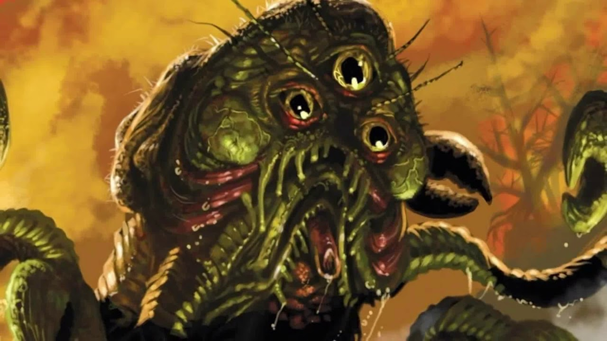

Три миллиона лет назад он пришел на Землю с тёмного Юггота и обитал в Арктике и Гиперборее, где ему поклонялись покрытые волосами людоеды гнофки. Огромный, в три метра ростом, Ран-Тегот имел шесть длинных лап с чёрными клешнями на концах. Его круглую, обрамлённую рядом гибких хоботков голову венчали три выпученных глаза, источавших нечеловеческую злобу, а в том месте, где голова соединялась с туловищем, располагались раздувшиеся жабры. Всё его шарообразное тело покрывали похожие на мех тонкие щупальца, оканчивавшиеся присосками с хищными змеиными пастями, причём на голове и под хоботками они были длиннее и украшены спиральными полосами.
При помощи этих щупалец Ран-Тегот питался кровью, высасывая ее из жертв и оставляя лишь измятые до неузнаваемости тела, испещренные тысячами похожих на укусы отверстий. Но без еды он засыпал и проводил в ожидании новых жертв миллионы лет. Так, в ХХ веке его обнаружил фанатичный владелец лондонского Музея Роджерса — в циклопическом каменном зале, скованном арктическими льдами, где Ран-Тегот восседал на своем величественном резном троне из слоновой кости.
Впервые появился в рассказе «Ужас в музее» (The Horror in the Museum, 1932), написанном Г. Ф. Лавкрафтом в соавторстве с Хейзел Хилд.
